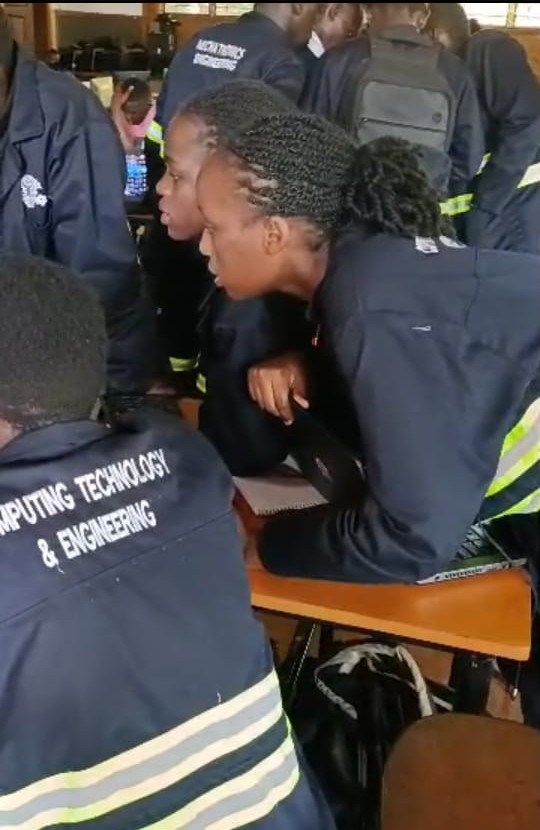
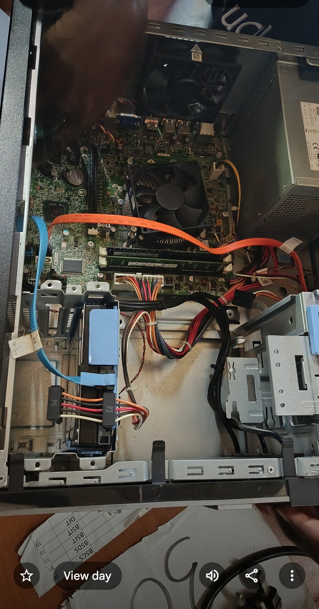
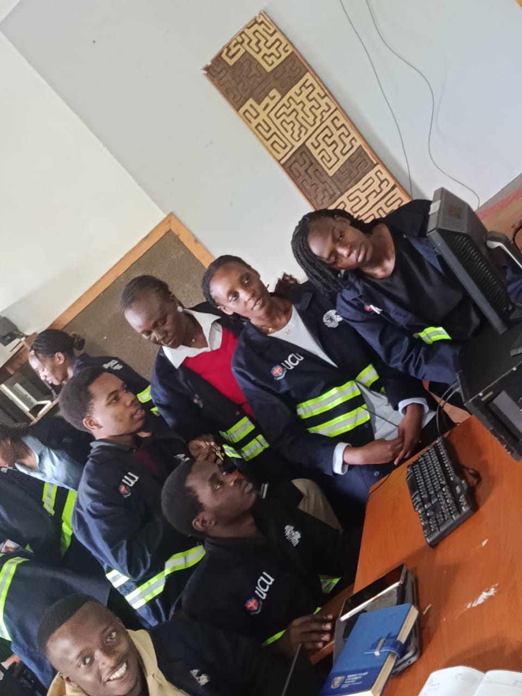
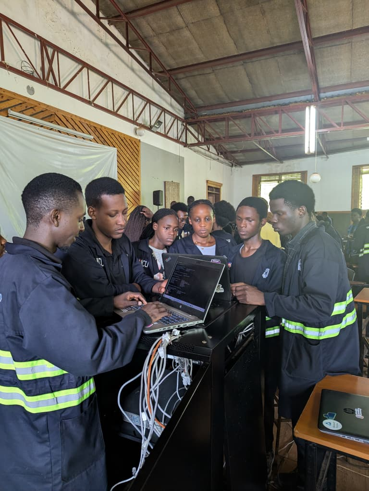
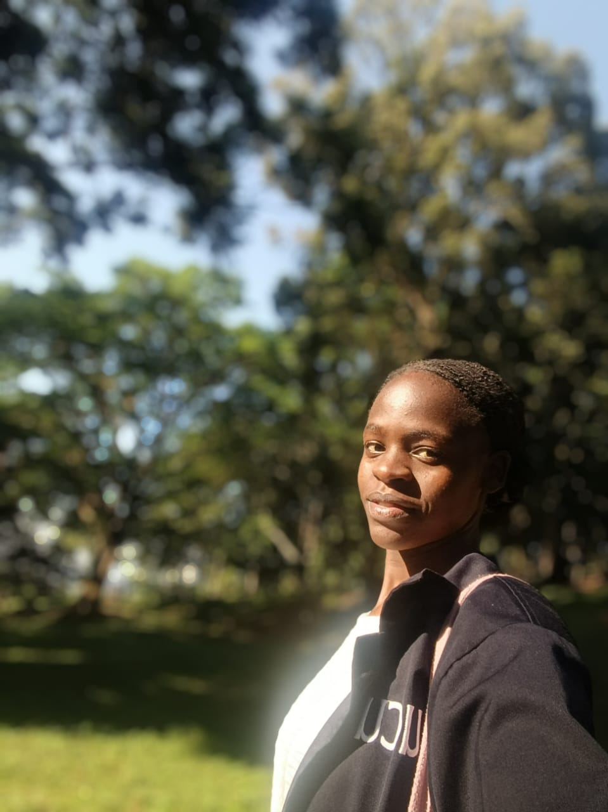
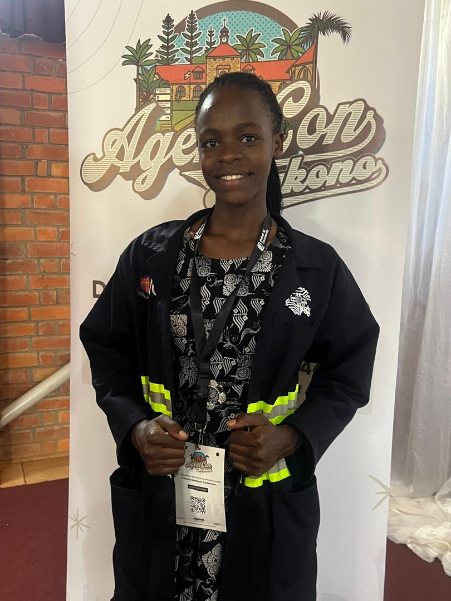
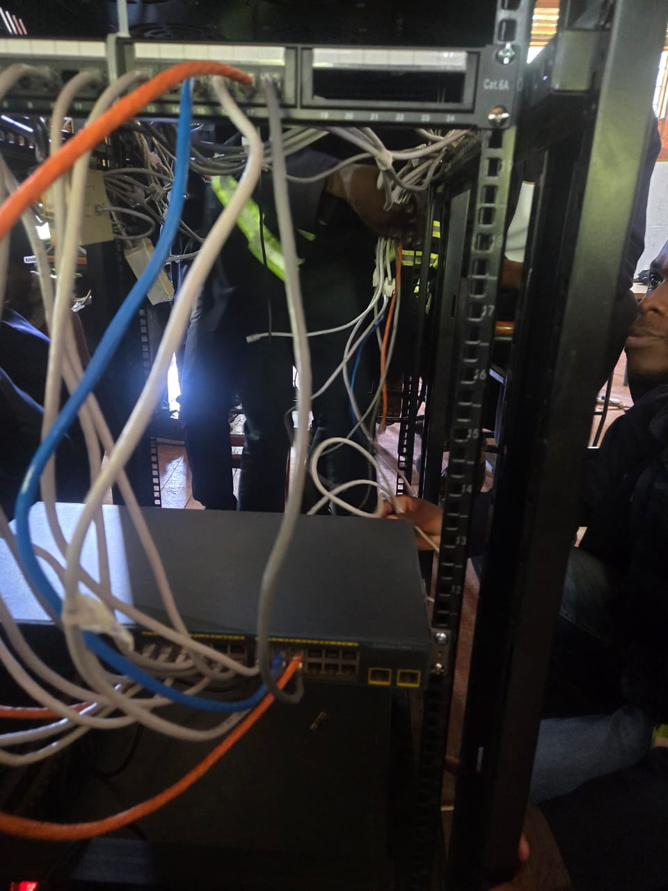
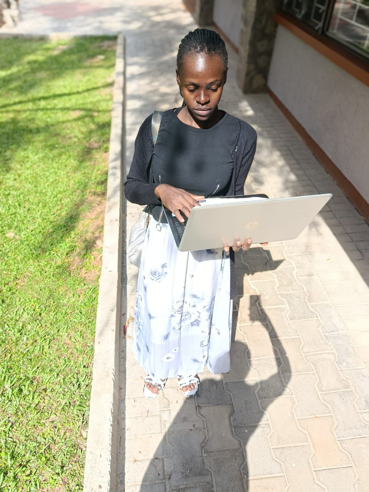
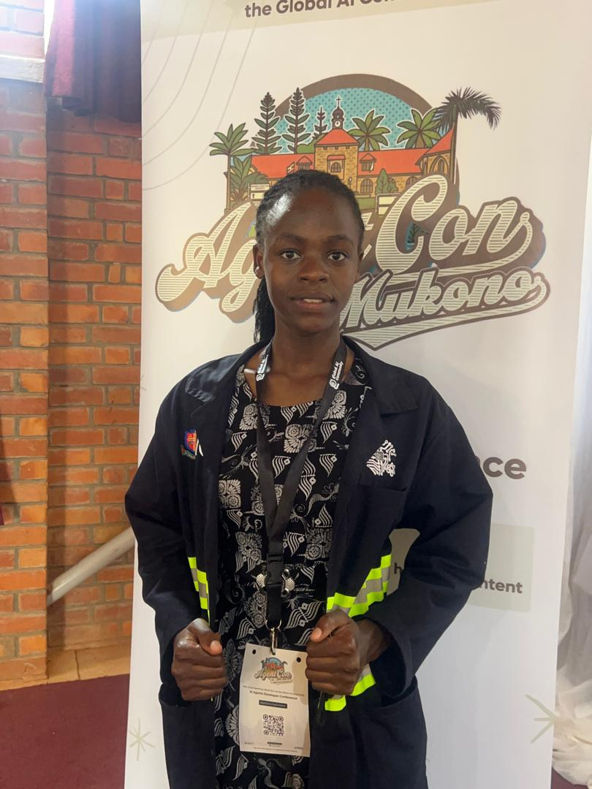
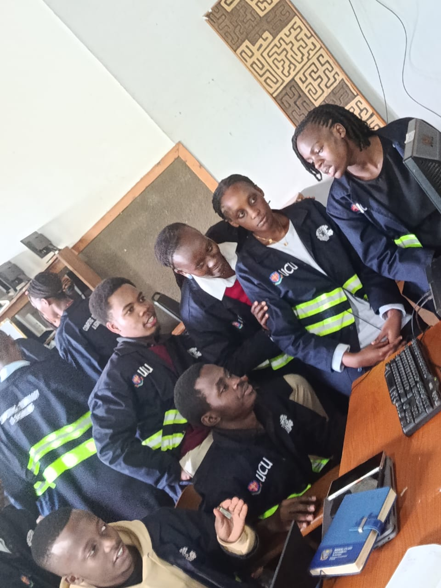

About My Interests and Hobbies
Beyond my academic studies and professional experiences, I enjoy activities that allow me to develop my creativity, communication skills and personal confidence. My interests include Information Technology, music, singing, writing story books and listening to music.
I also enjoy participating in practical technology activities and working together with other students to solve technical problems. These experiences continue to shape my interests and future career goals.
My Gallery
The photographs below show some of my academic, practical technology and personal experiences.

Participating in practical workshop activities with fellow students.

Practical experience working with computer hardware and system components.

Working with fellow students during an Information Technology practical activity.

Taking part in a collaborative learning experience.

Participating in an event connected to technology, innovation and learning.

Continuing to develop my knowledge and confidence through academic and professional experiences.

Participating in practical networking activities and working with networking equipment.

Using technology and a laptop to support learning, research and practical work.

Developing practical IT skills through hands-on learning and collaboration.

Strengthening my technical knowledge through practical Information Technology activities.
My Hobbies
My hobbies allow me to express my creativity, develop confidence and maintain a balanced lifestyle.
- Singing – I enjoy singing and using music as a way of expressing creativity and connecting with others.
- Writing Story Books – I enjoy creating stories and developing ideas through creative writing.
- Listening to Music – I enjoy listening to different types of music for relaxation, inspiration and creativity.
- Music Training – I enjoy training students in music and helping them develop their musical abilities.
- Exploring Technology – I enjoy learning about new technologies and discovering how they can solve real-world problems.
Areas of Interest
- Information Technology
- Computer Networking
- Programming
- Web Development
- Software Development
- Artificial Intelligence
- Agile Development
- Music and Creative Arts
- Technology Innovation
Personal Strengths
- Creativity
- Teamwork
- Communication
- Leadership
- Problem Solving
- Adaptability
- Willingness to Learn
- Time Management
Get in Touch
If you would like to contact me, you can use the form below.